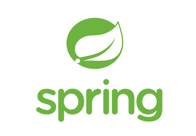
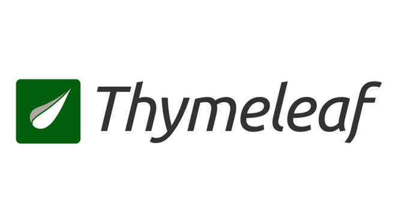
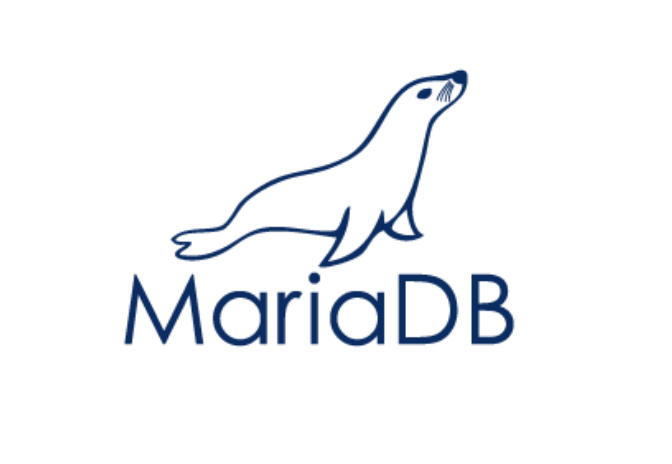
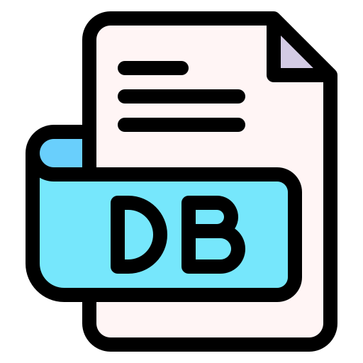
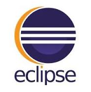
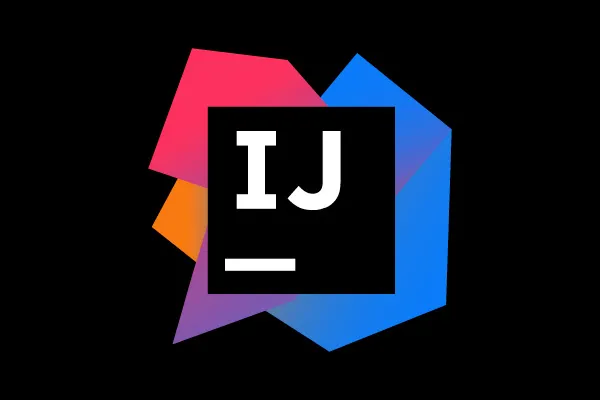

박주형 Park Ju Hyeong
학력
MIT능력 개발원
백석대학교
졸업학점 : 3.24
능동고등학교
자격증
-
SQLD 개발자
2024-06-14
-
정보처리기사 필기 (실기 준비중)
2022-08
경력사항
지트
부서 : 유지보수
사용기술

- 
.png)


- 

- 
- 


- 
- 


백엔드
프론트
DB
협업도구
기타
프로젝트
Team Project
서로다른 로그인계정으로 제품등록 , 업체등록진행하고 제품에 맞는 품목을 등록하고 계약을 진행하는 프로젝트입니다
도면과 업체를 등록해서 계약완료를 진행하고 ,
계약완료된 품목을 발주 , 진척검수 , 입고 , 출고 프로세스 과정을 진행하고 월별 , 부류별 출고금액을 확인할 수 있습니다
사용기술 : Java , Javascripts , HTML , CSS , Bootstrap , SpringBoots frameworks , mariaDB , Thymeleaf
자료보기
배포주소 접속
Team Project
운동하기 어려운 사용자들을 위한 운동영상제공 웹사이트 입니다
관리자가 가입신청 들어온 트레이너만 운동영상을 등록해서 상담신청 받을수있습니다.
상담을 통해서 트레이너와 사용자가 일정을 잡을수있습니다.
부적합한 영상이 업로드 되었을시 사용자가 신고기능을 통해 관리자 계정으로 정보가 전송되고 ,
관리자는 영상을 삭제할 수 있습니다.
사용언어 : Java , Javascripts , HTML , CSS , Bootstrap , SpringBoots frameworks , JSP , mariaDB
자료보기
배포주소 접속
Team Project
사용자가 직접 식자재에 대한 정보를 입력한후 그 식자재에 대한 유통기한과 특징을 볼수있습니다.
웹크롤링을 통해 레시피를 가공해서 원하는 레시피를 제공합니다
사용기술 : Java , Javascripts , HTML , CSS , Bootstrap , SpringBoots frameworks
자료보기
Team Project
그룹을 만들어서 사용자가 그룹에 가입,탈퇴 할수있는 서비스를 제공합니다
가입한 그룹안에서만 그룹원들끼리만 파일공유가 가능한 서비스를 제공하는 사이트입니다
사용기술 : Java , Javascripts , HTML , CSS , Bootstrap , JSP Servelet
파일 다운로드
자료보기
Solo Project
공공데이터 포털에서 제공하는 오픈 API를 제공받은후 jupyter notebook에서 CSV파일을 가공한후 원하는 데이터를 추출합니다
카페 상권의 월 지출내역을 기준으로 직접 소득분위를 1 ~ 9 분위로 나눈후 등급을 정해줍니다
등급에서 가공되어서 나온 상위 1 ~ 3등을 추출하고 위치가 어디인지 분석한후 그 주변상권들이 무엇이 있는지 보여줍니다.
사용기술 : Python , Open API
자료보기
성장과정
저는 초등학교 6학년 때 처음으로 스마트폰을 접하게 되었습니다. 중학교에 입학하면서 본격적으로 스마트폰을 사용하기 시작했고, 여러 웹사이트를 탐험하며 흥미를 느꼈습니다. 처음 접하는 디지털 세계가 신기하고 재미있었고, 자연스럽게 “이런 웹페이지와 서비스를 내가 직접 디자인하고 개발해보면 어떨까?”라는 생각이 들었습니다. 이 흥미는 저를 소프트웨어학과로 이끌었습니다. 소프트웨어학과에서 다양한 프로그래밍 언어를 배우며, 가장 기억에 남는 수업은 애플리케이션과 웹디자인, 데이터에 대한 프로젝트였습니다. 포토샵과 파워포인트로 직접 목업을 제작하며 디자인을 구현하는 과정이 무척 재미있었습니다. 이 프로젝트로 A+라는 높은 점수를 받으며 자신감을 얻었고, 디자인뿐만 아니라 직접 프로그래밍으로 구현해보고 싶다는 목표를 가지게 되었습니다.
성격의 장단점
“끈기” 저의 성격은 하나를 보면 끝까지 가보는 성격입니다. 그 하나에 쉽게 빠지고 노력을 많이합니다. 적응을 하고 업무나 공부에 집중하게 되면 결과가 어떻던 결과물이 나오기전까지 끝까지 해봐서 결과물을 저의 눈으로 봐야 풀리는 성격을 가지고 있습니다. 잘 되지 않을 경우에는 업무를 하지 않을때도 생각을 종종하면서 “이렇게 하면 될까?” 라는 생각을 자주합니다. 그 생각을 바로바로 대입시켜보면서 문제를 해결하는 성격을 가졌습니다. 이 성격의 장점으로는 쉽게 포기하지않는다 라는것입니다. 문제가 발생했을 때 멈추는것이아니라 뒤돌아보면서 뒤의 과정이 맞나 라는 생각을 하면서 문제를 해결합니다.
학교생활 및 경력사항
저는 “끈기”라는 성격을 바탕으로 창업동아리 CNI에 가입했습니다. 창업에 대한 관심보다는 “무엇을 하는 동아리일까?”라는 호기심에서 시작했습니다. 동아리 활동을 통해 학기마다 새로운 발명품을 조별로 구상하고 발표하는 활동에 참여했습니다. 학기 중 팀 프로젝트와 개인 프로젝트에 열심히 참여하며 좋은 결과를 얻어냈습니다. 방학 동안에는 다양한 아르바이트를 하며 실무 경험을 쌓았습니다. 지하철 전력 차단기 제작, 물류센터 근무, 삼성반도체에서의 반도체 생산 과정 체험 등을 통해 다양한 산업 현장을 경험했습니다. 또한, 방학 동안 컴활 1급 자격증과 정보처리기사 자격증을 취득하기 위해 공부하며 자기계발에도 힘썼습니다. 졸업후 "지트" 라는 공간정보기술을 주로 다루는 기업의 유지보수업무를 담당했습니다. 주로 SQL을 다루는 업무를 주로하였습니다. 재직도중 본인의 능력이 부족하다는 판단을 하였습니다. 그로인해서 퇴사를 결정하고, "취업을 다른 분야로 해야하나?" 라는 생각을 정말 많이 가지게 되었습니다. 하지만 "끈기"라는 성격을 가지고 한번 깊에 공부해보자 라는 마음가짐을 가지고 "MIT능력 개발 교욱원"에 수강신청 하였습니다. 교육원에서 제공하는 과정에서 여러 프로젝트를 경험하면서 많은것을 배우면서 취업할 준비가 완료되었다는 생각이 들었습니다. 과정수강중에 SQLD 자격증을 취득했습니다.
지원 동기 및 입사 포부
저의 목표는 사람들이 편리하게 사용할 수 있는 웹과 서비스를 만드는 것입니다. 비록 작은 서버에 배포해서 특정된 사람들만 사용하게 끔 배포를 한 경험을 가지고있습니다. 이것이 끝이 아닌 모든 사용자가 사용할 수 있는 규모의 프로젝트와 , 서버를 구축해서 다같이 사용할 수 있는 환경과 프로젝트를 만들어 제공하고싶습니다. 그 부족함을 상사나 동료들에게 배우고자 하는 열린 자세를 가지고 있습니다. 열심히만 하는 것이 아니라, 잘하는 사람으로 성장하여 이 기업에 필요한 일원이 되고 싶습니다. 저의 끈기와 학습능력을 바탕으로, 기업의 목표 달성에 기여하고 , 클라이언트에게 더욱 나은 서비스를 제공하는 데 이바지하겠습니다.
장학금 내역
-
교수추천 장학금
2020.06 - 과목 성적장학금